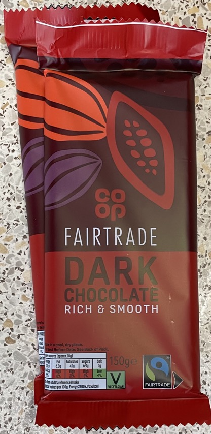

Brownies
Chocolate
- Melt together in microwave on low stirring every 30 secs
- 285g chocolate
- 185g unsalted butter cubed
- Leave to cool
Brownies
- Whisk together
- Whisk well with electric whisker until creamy
- Gently fold in melted chocolate mixture
- Sift in with medium strainer
- 85g plain flour
- 40g cocoa powder
- 1 tsp baking powder
- Pour into lined 20cm x 20cm baking tin
- Bake at 160°C for 30-35 mins
- Cool in tin for 1 hour
Serving
- Calories = 5400, 1/16 = 340
Notes
- Can use mixture of milk / white / dark chocolate but usually mainly dark
Pics


Version 1
- Made: 23 Nov 2022
- Too buttery, maybe too bitter from dark chocolate
- Cooked 32 mins, try longer
- Ingredients
- 350g dark chocolate
- 250g unsalted butter
- 3 large eggs
- 250g dark muscavado sugar
- 85g plain flour
- 1 tsp baking powder